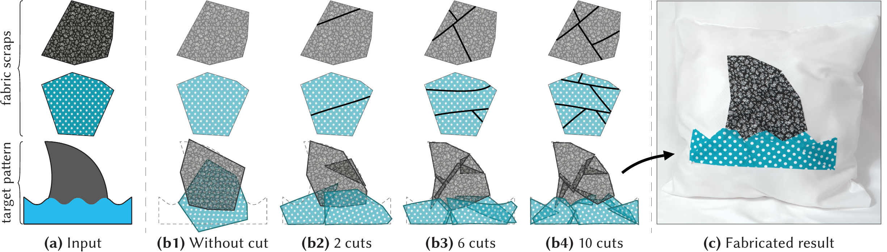

ScrapCuts: Fabric Scrap Recomposition with Differentiable Cutline Optimization

We present a method that recomposes scanned fabric scraps to match a given target pattern using a manageable number of cuts. Starting from the input scraps and target (a), it first optimizes the rigid poses of the uncut scraps (b1), then jointly optimizes cutline geometry and rigid piece poses, progressively improving the match with 2, 6, and 10 cuts (b2)–(b4). We glue the resulting 10-cut scrap composition to a cushion (c). Shark target artwork © Darius Dan.
Abstract
To reuse a fixed set of fabric scraps that might otherwise be discarded, we optimize cutting and piece placement to approximate a target design. Previous systems typically optimize scrap arrangements with fixed piece shapes, although cutting can improve their fit to the target. We present ScrapCuts, a gradient-based formulation that parameterizes cutlines on scraps, then jointly optimizes their geometry with piece poses so that the resulting piece shapes adapt to the target. We progressively introduce candidate cutlines while minimizing shape and color differences to the target, then reduce unnecessary cuts using a cut-sparsity energy. We demonstrate diverse recompositions, show in an ablation that optimizing cutline geometry reduces shape and color differences in every comparison, compare with a simulated-annealing baseline, and fabricate examples using generated cut plans and an assembly guide.
Supplementary Video
BibTeX
@inproceedings{Qian2026ScrapCuts,
author = {Qian, Yinfei and Becker, Quentin and Shen, I-Chao and Kono, Masahiro and
Rave, Hennes and Larsson, Maria and Igarashi, Takeo},
title = {ScrapCuts: Fabric Scrap Recomposition with Differentiable Cutline Optimization},
booktitle = {Proceedings of the 11th ACM Symposium on Computational Fabrication},
series = {SCF '26},
year = {2026},
publisher = {Association for Computing Machinery},
address = {New York, NY, USA},
location = {Tokyo, Japan},
isbn = {979-8-4007-2821-1},
doi = {10.1145/3828611.3845647},
url = {https://doi.org/10.1145/3828611.3845647},
numpages = {18},
keywords = {computational fabrication, textile reuse, differentiable rendering}
}Project pages are inspired by the websites of Quentin Becker and Zoë Marschner.